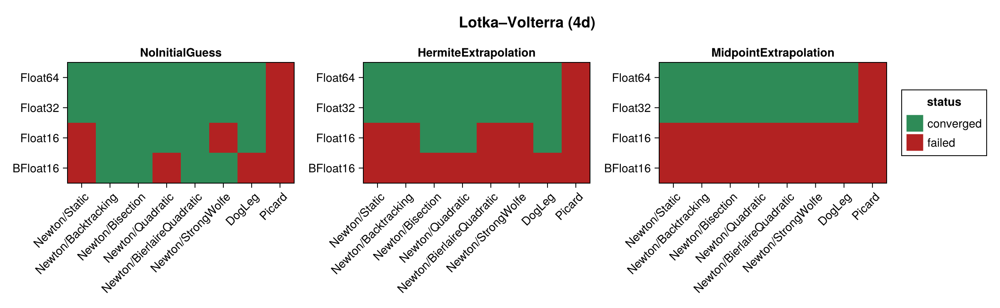
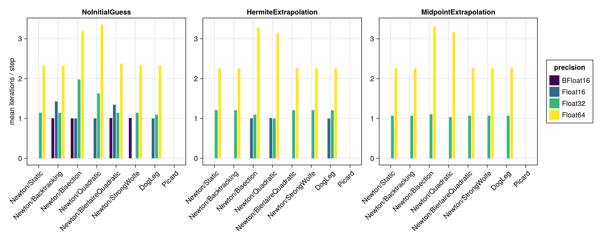
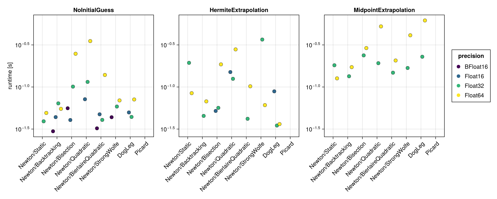
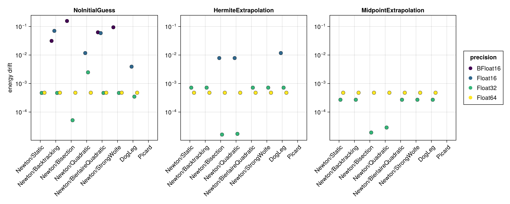
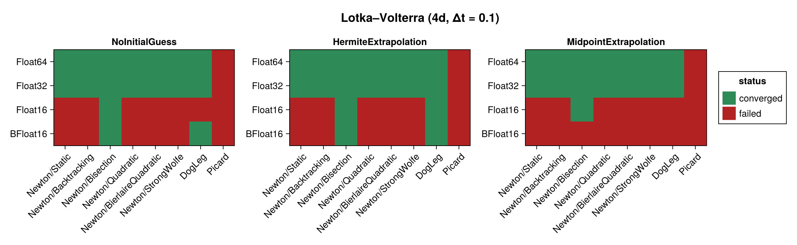
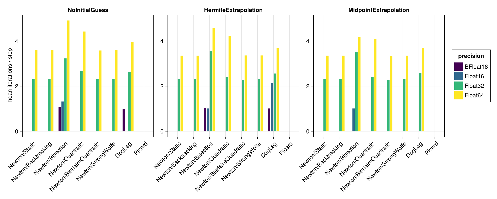
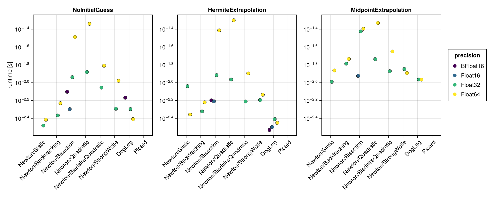
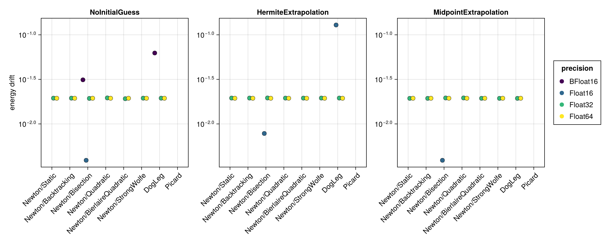

Lotka–Volterra (4d)
The 4d Lotka–Volterra system is a larger non-canonical Hamiltonian system, benchmarked in its implicit form via iodeproblem. Its Hamiltonian $H = a \cdot q + b \cdot \log q$ (positions only) is used for the energy-drift metric. It is more strongly degenerate than the Lotka–Volterra (2d) system and is the most demanding test for the nonlinear solvers here. As for the 2d case the native time span $(0, 10)$ with $\Delta t = 0.01$ is used, and then repeated for a ten times coarser step $\Delta t = 0.1$ (see Coarse time step (Δt = 0.1)).
The benchmark below is regenerated at documentation build time with a single, fast timing pass. See the driver script scripts/midpoint_lotka_volterra_4d.jl for accurate BenchmarkTools measurements.
using SolverBenchmark
spec = lotka_volterra_4d_spec()
df = cached_sweep("lotka_volterra_4d_dt0.01") do
run_benchmark(spec; timing = :quick, verbose = false, quiet = true)
endConvergence
plot_convergence(df; title = "Lotka–Volterra (4d)")
Nonlinear iterations
Mean number of nonlinear-solver iterations per time step (converged runs only):
plot_iterations(df)
Run time
plot_runtime(df)
Energy drift
Drift of the conserved Hamiltonian:
plot_energy_drift(df)
Discussion
- As for the 2d system,
Newton(robust line search) andDogLegconverge in about 2 iterations per step atFloat32/Float64(slightly more than the 2d case, ≈ 2.3), whilePicardnever converges. As for the 2d system,Picardis the only failure atFloat32/Float64. - The stronger degeneracy makes the 16-bit formats fail readily — the Newton linear solve raises a singular-Jacobian error for most configurations.
Float16reaches 14/24 here but only 6/24 at the coarse step;BFloat16manages 2/24 and 6/24.Float32andFloat64(21/24 each) again give essentially the same convergence pattern. BFloat16never beatsFloat16here either — the two tie at 6/24 at the coarse step, where theBFloat16time grid is not itself a limitation. As for the 2d system, the obstacle is Jacobian conditioning, which wants significand bits rather than exponent range.- This example demonstrates the harness's robustness: configurations that throw a
SingularException(rather than merely diverging) are caught and recorded as non-converged instead of aborting the sweep.
Results table
markdown_table(summary_table(df))| precision | solver_label | initial_guess | converged | iterations_mean | runtime_s | max_residual | at_tolerance | energy_drift |
|---|---|---|---|---|---|---|---|---|
| BFloat16 | Newton/Static | NoInitialGuess | ✗ | — | — | — | ✗ | — |
| BFloat16 | Newton/Static | HermiteExtrapolation | ✗ | — | — | — | ✗ | — |
| BFloat16 | Newton/Static | MidpointExtrapolation | ✗ | — | — | — | ✗ | — |
| BFloat16 | Newton/Backtracking | NoInitialGuess | ✓ | 1.01 | 0.0298 | 0.0623 | ✓ | 0.0312 |
| BFloat16 | Newton/Backtracking | HermiteExtrapolation | ✗ | — | — | — | ✗ | — |
| BFloat16 | Newton/Backtracking | MidpointExtrapolation | ✗ | — | — | — | ✗ | — |
| BFloat16 | Newton/Bisection | NoInitialGuess | ✓ | 1 | 0.0559 | 0.0583 | ✓ | 0.156 |
| BFloat16 | Newton/Bisection | HermiteExtrapolation | ✗ | — | — | — | ✗ | — |
| BFloat16 | Newton/Bisection | MidpointExtrapolation | ✗ | — | — | — | ✗ | — |
| BFloat16 | Newton/Quadratic | NoInitialGuess | ✗ | 1.06 | 0.0568 | 0.605 | ✗ | — |
| BFloat16 | Newton/Quadratic | HermiteExtrapolation | ✗ | — | — | — | ✗ | — |
| BFloat16 | Newton/Quadratic | MidpointExtrapolation | ✗ | — | — | — | ✗ | — |
| BFloat16 | Newton/BierlaireQuadratic | NoInitialGuess | ✓ | 1.01 | 0.0323 | 0.0623 | ✓ | 0.0625 |
| BFloat16 | Newton/BierlaireQuadratic | HermiteExtrapolation | ✗ | — | — | — | ✗ | — |
| BFloat16 | Newton/BierlaireQuadratic | MidpointExtrapolation | ✗ | — | — | — | ✗ | — |
| BFloat16 | Newton/StrongWolfe | NoInitialGuess | ✓ | 1.01 | 0.0437 | 0.0581 | ✓ | 0.0938 |
| BFloat16 | Newton/StrongWolfe | HermiteExtrapolation | ✗ | — | — | — | ✗ | — |
| BFloat16 | Newton/StrongWolfe | MidpointExtrapolation | ✗ | — | — | — | ✗ | — |
| BFloat16 | DogLeg | NoInitialGuess | ✗ | 1.05 | 0.0467 | 0.129 | ✗ | — |
| BFloat16 | DogLeg | HermiteExtrapolation | ✗ | — | — | — | ✗ | — |
| BFloat16 | DogLeg | MidpointExtrapolation | ✗ | — | — | — | ✗ | — |
| BFloat16 | Picard | NoInitialGuess | ✗ | — | — | — | ✗ | — |
| BFloat16 | Picard | HermiteExtrapolation | ✗ | — | — | — | ✗ | — |
| BFloat16 | Picard | MidpointExtrapolation | ✗ | — | — | — | ✗ | — |
| Float16 | Newton/Static | NoInitialGuess | ✗ | — | — | — | ✗ | — |
| Float16 | Newton/Static | HermiteExtrapolation | ✗ | — | — | — | ✗ | — |
| Float16 | Newton/Static | MidpointExtrapolation | ✗ | — | — | — | ✗ | — |
| Float16 | Newton/Backtracking | NoInitialGuess | ✓ | 1.43 | 0.0438 | 0.00779 | ✓ | 0.0703 |
| Float16 | Newton/Backtracking | HermiteExtrapolation | ✗ | — | — | — | ✗ | — |
| Float16 | Newton/Backtracking | MidpointExtrapolation | ✗ | — | — | — | ✗ | — |
| Float16 | Newton/Bisection | NoInitialGuess | ✓ | 1 | 0.0405 | 0.00568 | ✓ | 0 |
| Float16 | Newton/Bisection | HermiteExtrapolation | ✓ | 1 | 0.0519 | 0.00524 | ✓ | 0.00781 |
| Float16 | Newton/Bisection | MidpointExtrapolation | ✗ | — | — | — | ✗ | — |
| Float16 | Newton/Quadratic | NoInitialGuess | ✓ | 1 | 0.0715 | 0.00741 | ✓ | 0.0117 |
| Float16 | Newton/Quadratic | HermiteExtrapolation | ✓ | 1.01 | 0.15 | 0.00768 | ✓ | 0.00781 |
| Float16 | Newton/Quadratic | MidpointExtrapolation | ✗ | — | — | — | ✗ | — |
| Float16 | Newton/BierlaireQuadratic | NoInitialGuess | ✓ | 1.35 | 0.0474 | 0.00779 | ✓ | 0.0586 |
| Float16 | Newton/BierlaireQuadratic | HermiteExtrapolation | ✗ | — | — | — | ✗ | — |
| Float16 | Newton/BierlaireQuadratic | MidpointExtrapolation | ✗ | — | — | — | ✗ | — |
| Float16 | Newton/StrongWolfe | NoInitialGuess | ✗ | — | — | — | ✗ | — |
| Float16 | Newton/StrongWolfe | HermiteExtrapolation | ✗ | — | — | — | ✗ | — |
| Float16 | Newton/StrongWolfe | MidpointExtrapolation | ✗ | — | — | — | ✗ | — |
| Float16 | DogLeg | NoInitialGuess | ✓ | 1 | 0.0498 | 0.00615 | ✓ | 0.00391 |
| Float16 | DogLeg | HermiteExtrapolation | ✓ | 1 | 0.0888 | 0.00625 | ✓ | 0.0117 |
| Float16 | DogLeg | MidpointExtrapolation | ✗ | — | — | — | ✗ | — |
| Float16 | Picard | NoInitialGuess | ✗ | 4.14 | 0.112 | 0.957 | ✗ | — |
| Float16 | Picard | HermiteExtrapolation | ✗ | 2.76 | 0.106 | 0.151 | ✗ | — |
| Float16 | Picard | MidpointExtrapolation | ✗ | — | — | — | ✗ | — |
| Float32 | Newton/Static | NoInitialGuess | ✓ | 1.14 | 0.0391 | 9.33e-07 | ✓ | 0.000467 |
| Float32 | Newton/Static | HermiteExtrapolation | ✓ | 1.21 | 0.194 | 9.37e-07 | ✓ | 0.000717 |
| Float32 | Newton/Static | MidpointExtrapolation | ✓ | 1.07 | 0.181 | 9.16e-07 | ✓ | 0.00027 |
| Float32 | Newton/Backtracking | NoInitialGuess | ✓ | 1.14 | 0.0639 | 9.33e-07 | ✓ | 0.000467 |
| Float32 | Newton/Backtracking | HermiteExtrapolation | ✓ | 1.21 | 0.0453 | 9.37e-07 | ✓ | 0.000717 |
| Float32 | Newton/Backtracking | MidpointExtrapolation | ✓ | 1.07 | 0.134 | 9.16e-07 | ✓ | 0.00027 |
| Float32 | Newton/Bisection | NoInitialGuess | ✓ | 1.98 | 0.101 | 7.64e-07 | ✓ | 5.15e-05 |
| Float32 | Newton/Bisection | HermiteExtrapolation | ✓ | 1.1 | 0.0565 | 9.44e-07 | ✓ | 1.62e-05 |
| Float32 | Newton/Bisection | MidpointExtrapolation | ✓ | 1.11 | 0.237 | 9.4e-07 | ✓ | 1.91e-05 |
| Float32 | Newton/Quadratic | NoInitialGuess | ✓ | 1.63 | 0.115 | 9.53e-07 | ✓ | 0.00247 |
| Float32 | Newton/Quadratic | HermiteExtrapolation | ✓ | 1 | 0.125 | 9.25e-07 | ✓ | 1.72e-05 |
| Float32 | Newton/Quadratic | MidpointExtrapolation | ✓ | 1.04 | 0.192 | 9.34e-07 | ✓ | 2.86e-05 |
| Float32 | Newton/BierlaireQuadratic | NoInitialGuess | ✓ | 1.14 | 0.0406 | 9.33e-07 | ✓ | 0.000467 |
| Float32 | Newton/BierlaireQuadratic | HermiteExtrapolation | ✓ | 1.21 | 0.0419 | 9.37e-07 | ✓ | 0.000717 |
| Float32 | Newton/BierlaireQuadratic | MidpointExtrapolation | ✓ | 1.07 | 0.148 | 9.16e-07 | ✓ | 0.00027 |
| Float32 | Newton/StrongWolfe | NoInitialGuess | ✓ | 1.14 | 0.0586 | 9.33e-07 | ✓ | 0.000467 |
| Float32 | Newton/StrongWolfe | HermiteExtrapolation | ✓ | 1.21 | 0.366 | 9.37e-07 | ✓ | 0.000717 |
| Float32 | Newton/StrongWolfe | MidpointExtrapolation | ✓ | 1.07 | 0.168 | 9.16e-07 | ✓ | 0.00027 |
| Float32 | DogLeg | NoInitialGuess | ✓ | 1.1 | 0.0441 | 9.49e-07 | ✓ | 0.000347 |
| Float32 | DogLeg | HermiteExtrapolation | ✓ | 1.21 | 0.0348 | 9.37e-07 | ✓ | 0.000717 |
| Float32 | DogLeg | MidpointExtrapolation | ✓ | 1.07 | 0.229 | 9.16e-07 | ✓ | 0.00027 |
| Float32 | Picard | NoInitialGuess | ✗ | — | — | — | ✗ | — |
| Float32 | Picard | HermiteExtrapolation | ✗ | 4.47 | 0.117 | 0.000342 | ✗ | — |
| Float32 | Picard | MidpointExtrapolation | ✗ | 4.57 | 0.283 | 0.000487 | ✗ | — |
| Float64 | Newton/Static | NoInitialGuess | ✓ | 2.33 | 0.0492 | 1.77e-15 | ✓ | 0.000476 |
| Float64 | Newton/Static | HermiteExtrapolation | ✓ | 2.26 | 0.0844 | 1.72e-15 | ✓ | 0.000476 |
| Float64 | Newton/Static | MidpointExtrapolation | ✓ | 2.26 | 0.127 | 1.65e-15 | ✓ | 0.000476 |
| Float64 | Newton/Backtracking | NoInitialGuess | ✓ | 2.33 | 0.055 | 1.77e-15 | ✓ | 0.000476 |
| Float64 | Newton/Backtracking | HermiteExtrapolation | ✓ | 2.26 | 0.0674 | 1.72e-15 | ✓ | 0.000476 |
| Float64 | Newton/Backtracking | MidpointExtrapolation | ✓ | 2.26 | 0.172 | 1.65e-15 | ✓ | 0.000476 |
| Float64 | Newton/Bisection | NoInitialGuess | ✓ | 3.19 | 0.248 | 1.77e-15 | ✓ | 0.000476 |
| Float64 | Newton/Bisection | HermiteExtrapolation | ✓ | 3.28 | 0.186 | 1.63e-15 | ✓ | 0.000476 |
| Float64 | Newton/Bisection | MidpointExtrapolation | ✓ | 3.32 | 0.29 | 1.6e-15 | ✓ | 0.000476 |
| Float64 | Newton/Quadratic | NoInitialGuess | ✓ | 3.35 | 0.351 | 1.76e-15 | ✓ | 0.000476 |
| Float64 | Newton/Quadratic | HermiteExtrapolation | ✓ | 3.14 | 0.28 | 1.74e-15 | ✓ | 0.000476 |
| Float64 | Newton/Quadratic | MidpointExtrapolation | ✓ | 3.17 | 0.525 | 1.76e-15 | ✓ | 0.000476 |
| Float64 | Newton/BierlaireQuadratic | NoInitialGuess | ✓ | 2.38 | 0.139 | 1.76e-15 | ✓ | 0.000476 |
| Float64 | Newton/BierlaireQuadratic | HermiteExtrapolation | ✓ | 2.26 | 0.102 | 1.73e-15 | ✓ | 0.000476 |
| Float64 | Newton/BierlaireQuadratic | MidpointExtrapolation | ✓ | 2.26 | 0.206 | 1.7e-15 | ✓ | 0.000476 |
| Float64 | Newton/StrongWolfe | NoInitialGuess | ✓ | 2.33 | 0.0692 | 1.77e-15 | ✓ | 0.000476 |
| Float64 | Newton/StrongWolfe | HermiteExtrapolation | ✓ | 2.26 | 0.0609 | 1.72e-15 | ✓ | 0.000476 |
| Float64 | Newton/StrongWolfe | MidpointExtrapolation | ✓ | 2.26 | 0.412 | 1.65e-15 | ✓ | 0.000476 |
| Float64 | DogLeg | NoInitialGuess | ✓ | 2.33 | 0.0711 | 1.74e-15 | ✓ | 0.000476 |
| Float64 | DogLeg | HermiteExtrapolation | ✓ | 2.26 | 0.0362 | 1.72e-15 | ✓ | 0.000476 |
| Float64 | DogLeg | MidpointExtrapolation | ✓ | 2.26 | 0.617 | 1.65e-15 | ✓ | 0.000476 |
| Float64 | Picard | NoInitialGuess | ✗ | — | — | — | ✗ | — |
| Float64 | Picard | HermiteExtrapolation | ✗ | 34.6 | 0.61 | 0.0959 | ✗ | — |
| Float64 | Picard | MidpointExtrapolation | ✗ | 38.9 | 0.903 | 0.754 | ✗ | — |
Coarse time step (Δt = 0.1)
The same benchmark over $(0, 10)$ with a ten times larger step. As for the 2d system the converging solvers need more iterations (≈ 3.4 per step instead of ≈ 2), the same configurations keep failing, and Float16 fails almost entirely.
spec1 = lotka_volterra_4d_spec(timespan = (0.0, 10.0), timestep = 0.1)
df1 = cached_sweep("lotka_volterra_4d_dt0.1") do
run_benchmark(spec1; timing = :quick, verbose = false, quiet = true)
endConvergence
plot_convergence(df1; title = "Lotka–Volterra (4d, Δt = 0.1)")
Nonlinear iterations
plot_iterations(df1)
Run time
plot_runtime(df1)
Energy drift
plot_energy_drift(df1)
Results table
markdown_table(summary_table(df1))| precision | solver_label | initial_guess | converged | iterations_mean | runtime_s | max_residual | at_tolerance | energy_drift |
|---|---|---|---|---|---|---|---|---|
| BFloat16 | Newton/Static | NoInitialGuess | ✗ | — | — | — | ✗ | — |
| BFloat16 | Newton/Static | HermiteExtrapolation | ✗ | — | — | — | ✗ | — |
| BFloat16 | Newton/Static | MidpointExtrapolation | ✗ | — | — | — | ✗ | — |
| BFloat16 | Newton/Backtracking | NoInitialGuess | ✗ | — | — | — | ✗ | — |
| BFloat16 | Newton/Backtracking | HermiteExtrapolation | ✗ | — | — | — | ✗ | — |
| BFloat16 | Newton/Backtracking | MidpointExtrapolation | ✗ | — | — | — | ✗ | — |
| BFloat16 | Newton/Bisection | NoInitialGuess | ✓ | 1.06 | 0.00791 | 0.0566 | ✓ | 0.0312 |
| BFloat16 | Newton/Bisection | HermiteExtrapolation | ✓ | 1.02 | 0.00634 | 0.0564 | ✓ | 0 |
| BFloat16 | Newton/Bisection | MidpointExtrapolation | ✗ | — | — | — | ✗ | — |
| BFloat16 | Newton/Quadratic | NoInitialGuess | ✗ | — | — | — | ✗ | — |
| BFloat16 | Newton/Quadratic | HermiteExtrapolation | ✗ | — | — | — | ✗ | — |
| BFloat16 | Newton/Quadratic | MidpointExtrapolation | ✗ | — | — | — | ✗ | — |
| BFloat16 | Newton/BierlaireQuadratic | NoInitialGuess | ✗ | — | — | — | ✗ | — |
| BFloat16 | Newton/BierlaireQuadratic | HermiteExtrapolation | ✗ | — | — | — | ✗ | — |
| BFloat16 | Newton/BierlaireQuadratic | MidpointExtrapolation | ✗ | — | — | — | ✗ | — |
| BFloat16 | Newton/StrongWolfe | NoInitialGuess | ✗ | — | — | — | ✗ | — |
| BFloat16 | Newton/StrongWolfe | HermiteExtrapolation | ✗ | — | — | — | ✗ | — |
| BFloat16 | Newton/StrongWolfe | MidpointExtrapolation | ✗ | — | — | — | ✗ | — |
| BFloat16 | DogLeg | NoInitialGuess | ✓ | 1 | 0.00679 | 0.0486 | ✓ | 0.0625 |
| BFloat16 | DogLeg | HermiteExtrapolation | ✓ | 1.01 | 0.00295 | 0.0427 | ✓ | 0 |
| BFloat16 | DogLeg | MidpointExtrapolation | ✗ | — | — | — | ✗ | — |
| BFloat16 | Picard | NoInitialGuess | ✗ | — | — | — | ✗ | — |
| BFloat16 | Picard | HermiteExtrapolation | ✗ | — | — | — | ✗ | — |
| BFloat16 | Picard | MidpointExtrapolation | ✗ | — | — | — | ✗ | — |
| Float16 | Newton/Static | NoInitialGuess | ✗ | — | — | — | ✗ | — |
| Float16 | Newton/Static | HermiteExtrapolation | ✗ | — | — | — | ✗ | — |
| Float16 | Newton/Static | MidpointExtrapolation | ✗ | — | — | — | ✗ | — |
| Float16 | Newton/Backtracking | NoInitialGuess | ✗ | 2.4 | 0.00515 | 0.11 | ✗ | — |
| Float16 | Newton/Backtracking | HermiteExtrapolation | ✗ | — | — | — | ✗ | — |
| Float16 | Newton/Backtracking | MidpointExtrapolation | ✗ | — | — | — | ✗ | — |
| Float16 | Newton/Bisection | NoInitialGuess | ✓ | 1.32 | 0.00505 | 0.00778 | ✓ | 0.00391 |
| Float16 | Newton/Bisection | HermiteExtrapolation | ✓ | 1.01 | 0.00617 | 0.00379 | ✓ | 0.00781 |
| Float16 | Newton/Bisection | MidpointExtrapolation | ✓ | 1.01 | 0.0119 | 0.0059 | ✓ | 0.00391 |
| Float16 | Newton/Quadratic | NoInitialGuess | ✗ | — | — | — | ✗ | — |
| Float16 | Newton/Quadratic | HermiteExtrapolation | ✗ | — | — | — | ✗ | — |
| Float16 | Newton/Quadratic | MidpointExtrapolation | ✗ | — | — | — | ✗ | — |
| Float16 | Newton/BierlaireQuadratic | NoInitialGuess | ✗ | — | — | — | ✗ | — |
| Float16 | Newton/BierlaireQuadratic | HermiteExtrapolation | ✗ | 1.34 | 0.00402 | 0.241 | ✗ | — |
| Float16 | Newton/BierlaireQuadratic | MidpointExtrapolation | ✗ | — | — | — | ✗ | — |
| Float16 | Newton/StrongWolfe | NoInitialGuess | ✗ | — | — | — | ✗ | — |
| Float16 | Newton/StrongWolfe | HermiteExtrapolation | ✗ | — | — | — | ✗ | — |
| Float16 | Newton/StrongWolfe | MidpointExtrapolation | ✗ | — | — | — | ✗ | — |
| Float16 | DogLeg | NoInitialGuess | ✗ | 2.35 | 0.00328 | 0.0693 | ✗ | — |
| Float16 | DogLeg | HermiteExtrapolation | ✓ | 2.13 | 0.00318 | 0.00737 | ✓ | 0.129 |
| Float16 | DogLeg | MidpointExtrapolation | ✗ | 2.21 | 0.0113 | 0.077 | ✗ | — |
| Float16 | Picard | NoInitialGuess | ✗ | — | — | — | ✗ | — |
| Float16 | Picard | HermiteExtrapolation | ✗ | 2.72 | 0.00499 | 0.194 | ✗ | — |
| Float16 | Picard | MidpointExtrapolation | ✗ | 3.56 | 0.0116 | 0.253 | ✗ | — |
| Float32 | Newton/Static | NoInitialGuess | ✓ | 2.3 | 0.0033 | 8.63e-07 | ✓ | 0.0195 |
| Float32 | Newton/Static | HermiteExtrapolation | ✓ | 2.3 | 0.00914 | 5.44e-07 | ✓ | 0.0195 |
| Float32 | Newton/Static | MidpointExtrapolation | ✓ | 2.31 | 0.0102 | 8.17e-07 | ✓ | 0.0194 |
| Float32 | Newton/Backtracking | NoInitialGuess | ✓ | 2.31 | 0.00429 | 8.63e-07 | ✓ | 0.0195 |
| Float32 | Newton/Backtracking | HermiteExtrapolation | ✓ | 2.3 | 0.00477 | 5.44e-07 | ✓ | 0.0195 |
| Float32 | Newton/Backtracking | MidpointExtrapolation | ✓ | 2.3 | 0.0163 | 8.17e-07 | ✓ | 0.0194 |
| Float32 | Newton/Bisection | NoInitialGuess | ✓ | 3.23 | 0.0115 | 7.87e-07 | ✓ | 0.0193 |
| Float32 | Newton/Bisection | HermiteExtrapolation | ✓ | 3.54 | 0.0121 | 8.67e-07 | ✓ | 0.0196 |
| Float32 | Newton/Bisection | MidpointExtrapolation | ✓ | 3.5 | 0.0376 | 9.44e-07 | ✓ | 0.0196 |
| Float32 | Newton/Quadratic | NoInitialGuess | ✓ | 2.67 | 0.0132 | 9.15e-07 | ✓ | 0.0196 |
| Float32 | Newton/Quadratic | HermiteExtrapolation | ✓ | 2.39 | 0.0109 | 8.36e-07 | ✓ | 0.0195 |
| Float32 | Newton/Quadratic | MidpointExtrapolation | ✓ | 2.41 | 0.0184 | 9.01e-07 | ✓ | 0.0196 |
| Float32 | Newton/BierlaireQuadratic | NoInitialGuess | ✓ | 2.3 | 0.00879 | 7.97e-07 | ✓ | 0.0192 |
| Float32 | Newton/BierlaireQuadratic | HermiteExtrapolation | ✓ | 2.27 | 0.00616 | 9.29e-07 | ✓ | 0.0195 |
| Float32 | Newton/BierlaireQuadratic | MidpointExtrapolation | ✓ | 2.28 | 0.0134 | 7.61e-07 | ✓ | 0.0194 |
| Float32 | Newton/StrongWolfe | NoInitialGuess | ✓ | 2.31 | 0.0051 | 8.63e-07 | ✓ | 0.0195 |
| Float32 | Newton/StrongWolfe | HermiteExtrapolation | ✓ | 2.31 | 0.00639 | 5.44e-07 | ✓ | 0.0195 |
| Float32 | Newton/StrongWolfe | MidpointExtrapolation | ✓ | 2.3 | 0.0142 | 8.17e-07 | ✓ | 0.0194 |
| Float32 | DogLeg | NoInitialGuess | ✓ | 2.64 | 0.00505 | 6.81e-07 | ✓ | 0.0194 |
| Float32 | DogLeg | HermiteExtrapolation | ✓ | 2.56 | 0.00391 | 5.37e-07 | ✓ | 0.0195 |
| Float32 | DogLeg | MidpointExtrapolation | ✓ | 2.59 | 0.0109 | 8.17e-07 | ✓ | 0.0194 |
| Float32 | Picard | NoInitialGuess | ✗ | — | — | — | ✗ | — |
| Float32 | Picard | HermiteExtrapolation | ✗ | — | — | — | ✗ | — |
| Float32 | Picard | MidpointExtrapolation | ✗ | — | — | — | ✗ | — |
| Float64 | Newton/Static | NoInitialGuess | ✓ | 3.6 | 0.00384 | 1.54e-15 | ✓ | 0.0194 |
| Float64 | Newton/Static | HermiteExtrapolation | ✓ | 3.35 | 0.00439 | 1.77e-15 | ✓ | 0.0194 |
| Float64 | Newton/Static | MidpointExtrapolation | ✓ | 3.35 | 0.0137 | 1.73e-15 | ✓ | 0.0194 |
| Float64 | Newton/Backtracking | NoInitialGuess | ✓ | 3.6 | 0.00589 | 1.54e-15 | ✓ | 0.0194 |
| Float64 | Newton/Backtracking | HermiteExtrapolation | ✓ | 3.35 | 0.00602 | 1.77e-15 | ✓ | 0.0194 |
| Float64 | Newton/Backtracking | MidpointExtrapolation | ✓ | 3.35 | 0.0184 | 1.73e-15 | ✓ | 0.0194 |
| Float64 | Newton/Bisection | NoInitialGuess | ✓ | 4.91 | 0.0325 | 1.42e-15 | ✓ | 0.0194 |
| Float64 | Newton/Bisection | HermiteExtrapolation | ✓ | 4.56 | 0.0386 | 8.13e-16 | ✓ | 0.0194 |
| Float64 | Newton/Bisection | MidpointExtrapolation | ✓ | 4.17 | 0.0402 | 1.23e-15 | ✓ | 0.0194 |
| Float64 | Newton/Quadratic | NoInitialGuess | ✓ | 4.42 | 0.0458 | 1.37e-15 | ✓ | 0.0194 |
| Float64 | Newton/Quadratic | HermiteExtrapolation | ✓ | 4.23 | 0.0501 | 9.99e-16 | ✓ | 0.0194 |
| Float64 | Newton/Quadratic | MidpointExtrapolation | ✓ | 4.1 | 0.0468 | 1.21e-15 | ✓ | 0.0194 |
| Float64 | Newton/BierlaireQuadratic | NoInitialGuess | ✓ | 3.58 | 0.0155 | 1.6e-15 | ✓ | 0.0194 |
| Float64 | Newton/BierlaireQuadratic | HermiteExtrapolation | ✓ | 3.36 | 0.0127 | 1.53e-15 | ✓ | 0.0194 |
| Float64 | Newton/BierlaireQuadratic | MidpointExtrapolation | ✓ | 3.33 | 0.0224 | 1.09e-15 | ✓ | 0.0194 |
| Float64 | Newton/StrongWolfe | NoInitialGuess | ✓ | 3.6 | 0.0105 | 1.54e-15 | ✓ | 0.0194 |
| Float64 | Newton/StrongWolfe | HermiteExtrapolation | ✓ | 3.36 | 0.00732 | 1.77e-15 | ✓ | 0.0194 |
| Float64 | Newton/StrongWolfe | MidpointExtrapolation | ✓ | 3.35 | 0.0128 | 1.73e-15 | ✓ | 0.0194 |
| Float64 | DogLeg | NoInitialGuess | ✓ | 3.96 | 0.0039 | 1.75e-15 | ✓ | 0.0194 |
| Float64 | DogLeg | HermiteExtrapolation | ✓ | 3.68 | 0.00354 | 1.77e-15 | ✓ | 0.0194 |
| Float64 | DogLeg | MidpointExtrapolation | ✓ | 3.7 | 0.0108 | 1.73e-15 | ✓ | 0.0194 |
| Float64 | Picard | NoInitialGuess | ✗ | — | — | — | ✗ | — |
| Float64 | Picard | HermiteExtrapolation | ✗ | — | — | — | ✗ | — |
| Float64 | Picard | MidpointExtrapolation | ✗ | 27.2 | 0.0819 | 9.6 | ✗ | — |